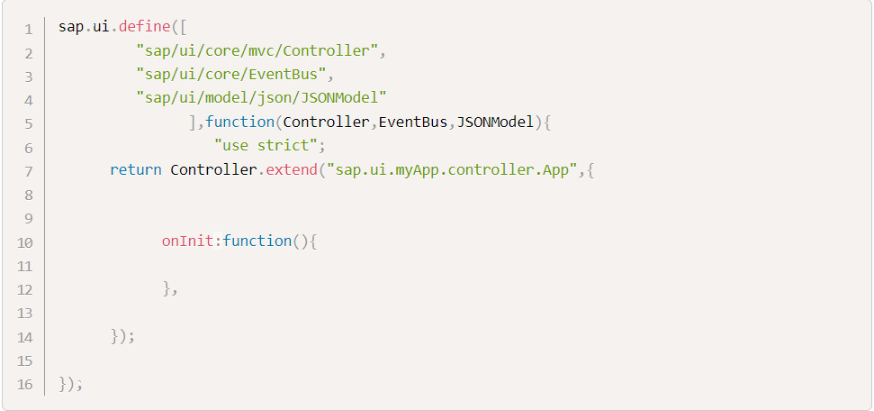
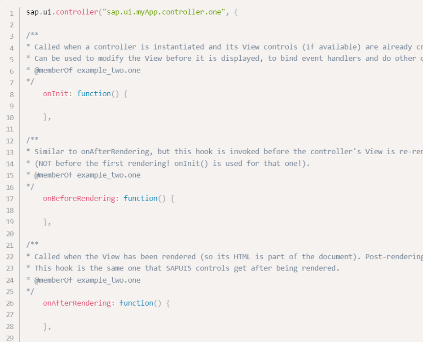
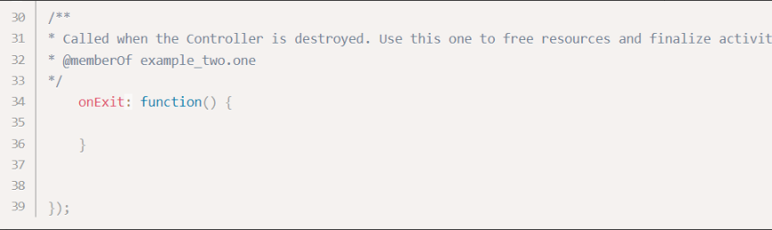
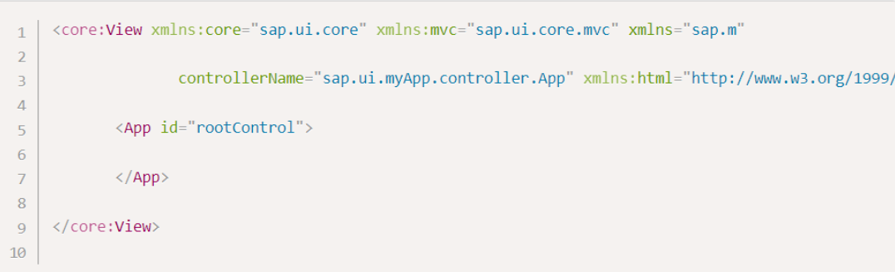
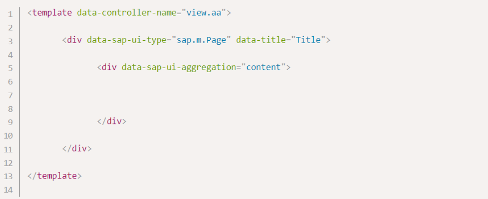
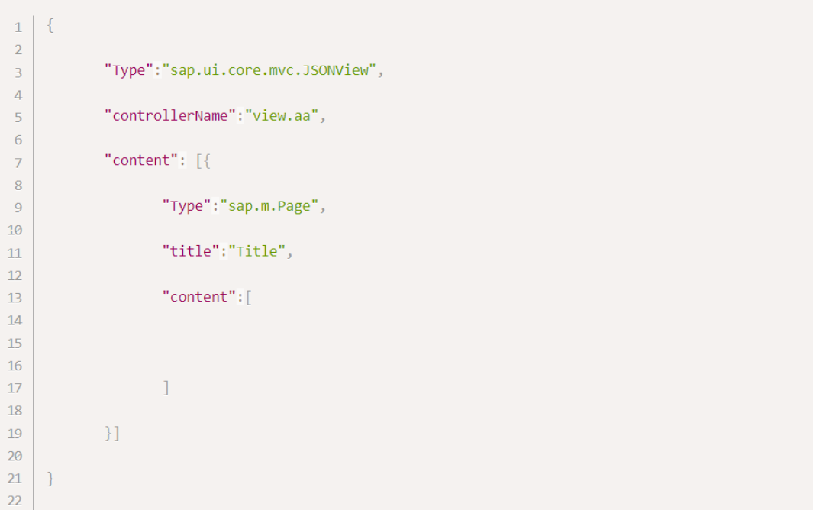
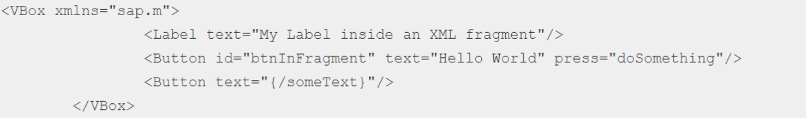
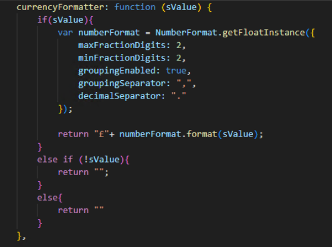
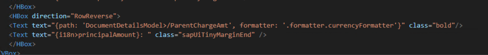
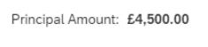

⮟ Introduction to UI5
⮟ Project Folder Breakdown
1. Introduction 2. Breakdown 2.1 Controllers 2.2 Views 2.3 Fragments 2.4 CSS 2.5 i18n 2.6 Formatter 2.7 index.html 2.8 manifest.jsno 2.9 component.js 2.10 models.js 2.11 Theme
Project Folder Breakdown
Introduction
In this document, we will breakdown the folders and files used throughout UI5 applications. We'll look into how each are used and how they connect to each other.
Breakdown
Controllers
The controller is responsible for responding to the user input and perform interactions on the view as well as the back end data. The controller can receive the input, then validate the input and then perform the business operation that modifies the state of the data model. Every view has its own controller although it is not mandatory for an view to have an controller. Usually a controller has the same name as the view except in the case of base controller. The controller in SAPUI5 is always in the JavaScript format, with the ".controller.js" extension. The controller primarily consists of functions that are called from the views whenever an event occurs. In SAPUI5, controllers can be defined in two ways:
Asynchronous Module Definition (AMD) Structure

Not using the AMD Structure


The AMD structure is more preferred as we can add dependencies as well as extend other components such as base controller using the AMD structure.
The lifecycle of a Controller is mainly determined by the following methods (also known as the hook methods):
init:
The controller is born! It is called when a view is instantiated and its controls Function is called by the framework during constructor execution. All the initialization stuff here.It is used to modify the view before it is displayed to bind event handlersonBeforeRendering:
Called by the framework before the rendering of the control is started. Triggers before every (re)rendering.onAfterRendering:
Called by the framework after the rendering of the control has completed. Triggers after every (re)rendering.exit:
Called before destroying the view. Cleans up the instances before destruction. Called by the framework. It frees the resources and finalizes activities.
Views
Views in SAPUI5 is like a user interface. Views display data using the model to the user and also enables them to modify the data. In SAPUI5, the views basically is a container for UI5 screen elements (such as button, input fields, tables, lists, etc) and UI5 layouts (HBox, VBox, Flex box, etc). The views are used to define and render the UI.
In SAPUI5, there are 4 types of views:
- JS Views - in JavaScript format. The extension of the view file is ".view.js". By default, every JS view has the foll. two methods:
getControllerName():
Specifies the controller belonging to this view.If this method is not implemented or returns NULL, the view has no controller.createContent():
Called initially once after the controller has been instantiated.This method is used to create the UI. As the method knows the controller, it can directly attach the event handler
Advantages
- Data binding is customizable.
- Templating can be done.
- No parsing overhead, hence relatively faster execution.
Disadvantages
- Functions (Behaviour code) can be written within the view itself (Not following MVC).
- Cannot embed HTML elements.
- XML Views - in the XML format. The file name ends with the extension ".view.xml". There are no predefined methods in the XML view.
Advantages
- Validation of elements
- Supports embedding of HTML elements.

- HTML Views - in HTML format. The file name ends with the extension ".view.html". Here we create the controls within the <div> tags, as we do while developing HTML pages.

- JSON Views - in JSON format. The file name ends with the extension ".view.json".

XML view is mostly used. In all FIORI apps, we use the XML views. Apart from these views, the user can define an custom view, by entending the sap.ui.core.mvc.View library.
Fragments
Fragments are light-weight UI parts which can be reused, defined similar to views, but do not have any controller or other behavior code involved. They can connect to existing controllers of the
"owning" view. This means that one important characteristic of fragments is that they are independent of the MVC concept and can be used without using MVC. However, if fragments are used together
with views and controllers, fragments can make use of them and integrate them neatly.
XML fragments are similar to XML view, but have no
You define a simple XML fragment as shown in the following code snippet:

The event handler is bound to the doSomething method of a controller. This is expressed by the doSomething value of the press event attribute. This means that this fragment can only be instantiated with a controller if the controller has this method. If not, the code throws an error.
CSS
CSS stands for cascading style sheets and it can help In dramatically changing the look and feel of our application. SAPUI5 provides the flexibility of adding custom style classes to SAPUI5 controls. SAPUI5 controls are styled with CSS, and as applications can provide their own CSS, they can adapt the styling. However, the deeper such adaptations are, the more likely is it that they break with future SAPUI5 updates or with other libraries and apps getting involved. If you follow the rules listed below, you will reduce the risk of this happening.
i18n
Many companies use SAP systems and applications and many different countries. To ensure easy translation, the “i18n” (Internationalization) process is used. The app is not always recreated, but only the texts are translated and replaced. The individual translations are stored in the i18n folder with the prefix i18n_ and the corresponding language tag. In addition, a default file is defined which is automatically called if no language is specified. This way, they are all in a central place and can be easily translated into other languages. This process of internationalization – in short i18n – is achieved in SAPUI5 by using a special resource model and the standard data binding syntax, but without a preceding " / " character.
Formatter
Data that is presented on the UI often has to be converted so that it's human readable and fits to the locale of the user. On the other hand, data entered by the user has to be parsed and validated to be understood by the data source. For this purpose, you use formatters and data types. Formatters are used to define the formatting of data on the UI while data types work in both directions: they format the data on the UI and parse and validate user input that is entered. You can either use standard formatters and data types or define your own custom objects. Example:

Which can then be used in the view like this:

And presents on screen like this:

index.html
Index. html is an HTML file that serves as the home page for a website. It's often the first file that visitors to a website will see. A minimalistic index. html file is needed to test the project configuration. The heart of an application is defined in its Component part, which means that we should aim for very minimal content in the index.html file itself. We have a header and the standard variant SAPUI5 bootstrap, the application startup, and a particular focus on resources and namespaces.
manifest.json
The Descriptor (manifest. json) file defines static information about the application, such as the name of the application or the location of various files. It is written in JavaScript Object Notation (JSON) format. If your application still uses the application configuration file, you can skip this section. The manifest. json file specifies how to launch your application. Optionally, you can include the runtime version and other parameters.
component.js
The component.js file is the component controller and provides the runtime metadata and the component methods. A component can depend on the entire SAPUI5 library. If you only require particular controls, you can also start with the corresponding require statements directly.
models.js
A central place to declare global models that are then accessible throughout the entire code.
Theme
SAPUI5 supports you when creating and using different visual designs - called themes - that can be used alternatively and switched on the fly. This way, the same application can look very different, depending on the user's design preference or accessibility requirements. Existing themes can serve as a basis for new themes and, in case of new design trends, it is possible to create a matching theme for all existing applications without modifying the applications. The theme handling is decoupled from application development and done in a separate layer. The SAPUI5 library loads the required CSS files and offers ways of switching themes.